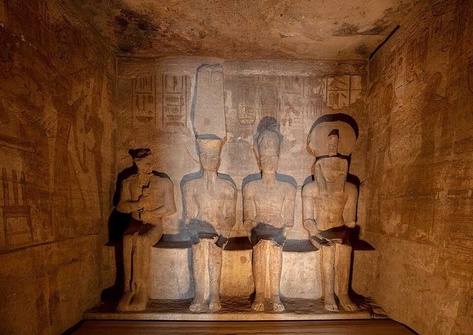

Зачем Рамсес срубил гору
Абу-Симбел — два храма, высеченных в песчаниковой горе на западном берегу Нила в Нубии (близ современной границы с Суданом), ок. 1264 до н. э., работа Рамсеса II в память победы при Кадеше и для египтизации Нубии. Большой храм посвящён «божественному Рамсесу» и трём богам: Амону-Ра, Ра-Хорахти и Птаху — то есть сам фараон стоит в ряду богов: это храм обожествлённого царя, политический манифест в камне. Перед входом — четыре колосса царя в тронной позе, ~20 м каждый; у ног — маленькие фигуры семьи: мать, жена Нефертари, дети (размер = иерархия: сакральная перспектива). У подножия одного из колоссов — трещина: «поёт» на рассвете (как Мемнон) — юго-западный колосс «пел» на рассвете — греки дали ему имя Мемнона, и в римскую эпоху к нему ходили паломники на ногах — сотни греко-римских автографов.
Солнечное выравнивание
Внутренняя ось большого храма ориентирована так, что дважды в год (~22 февраля и ~22 октября) восходящее солнце проникает через вход на 60 м вглубь и озарает статую «Ра-Хорахти» и Рамсеса в глубинном святилище; статуя Птаха в конце ряда остаётся в темноте — Птах, бог «скрытого мира», по замыслу не освещается. Дата привязана, вероятнее всего, к дню коронации/дня рождения Рамсеса (спор о точных датах и «смещении» из-за прецессии не утихает). Раз в год, в «солнечное чудо», к храму съезжаются тысячи — древняя архитектура как точнейшие часы.
Малый храм, соседний, посвящён Хатор и «Нефертари, любимой богов» — — редчайший случай: храм, официально поставленный «жене»: царица изображена на равных с царём (на стенах — Нефертари дарит богам, царь подносит дары Нефертари — сцены нежности, необычные для жанра).
Спасение из-под воды
Строительство Асуанской плотины (1960-е) грозило затопить храмы водами нового озера Насер. В 1964–68 прошла крупнейшая в истории спасательная операция под эгидой ЮНЕСКО: храмы «нарезали» на блоки (Большой — на 1036 блоков до 30 т), подняли на 65 м выше и 200 м восточнее и собрали заново — точность сборки такова, что солнечное выравнивание сохранилось (со сдвигом в сутки из-за нового горизонта). Операция стоила ~40 млн долларов (половину — от подписки мирового общества, «билет на спасение») и породила саму идею «всемирного наследия»: конвенция ЮНЕСКО 1972 года — дочь Абу-Симбела. Название — от мальчика Абу Симбела, указавшего в 1813 году швейцарскому путешественнику Буркхардту занесённую песком гору.